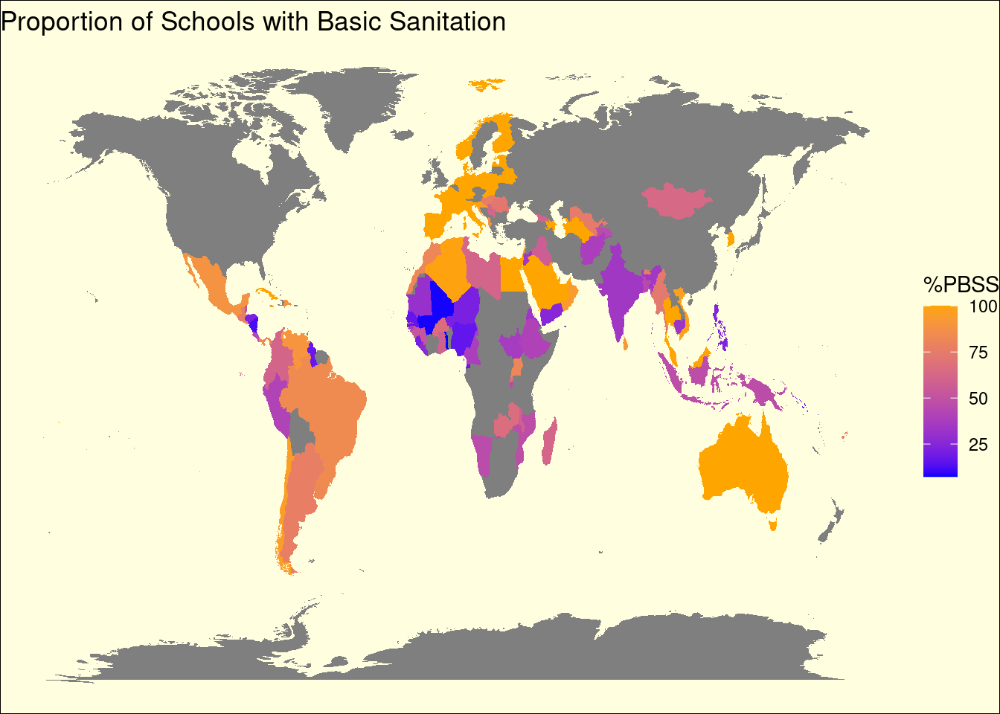

School Sanitation: Lessons from the COVID-19 Pandemic
Global Trends and Insights from 2020
Introduction
In 2020, the world faced unprecedented challenges due to the COVID-19 pandemic, affecting various sectors, including education. Basic sanitation in schools is a fundamental right and it is a necessity for safe learning environments, as a result of the pandemic sanitation in schools came under scrutiny. This report delves into the state of basic sanitation in schools across different countries across the world over the years, with a focus on the period of 2020.
Global Overview
A Decade in Review
Focusing on a select group of countries (Germany, India, Niger, Mexico, and Afghanistan), we observe the trajectory of basic sanitation in schools over the last decade. While Germany boasts a consistent 100% rate, showcasing its robust infrastructure and commitment to student welfare, Afghanistan remains constant at 38.2%, reflecting persistent challenges. In contrast, Mexico shows a decline in basic sanitation, raising concerns about deteriorating conditions. India and Niger, however, offer glimmers of hope with their upward trends, suggesting improvements in their educational environments. Note: there is gaps in the data therefore leading to gaps in this time series.
The Impact of GDP on Sanitation in 2020
We then narrow down to the pivotal year of 2020, we explore the relationship between a country’s economic status (measured by GDP) and the proportion of schools with basic sanitation. Our scatterplot for selected countries with an average GDP of 0-50,000 USD reveals a complex picture. It prompts us to question how economic health influences a country’s ability to provide basic sanitation in schools, especially during a global health crisis.The scatterplot focuses on countries with a GDP between 0 and 50,000 USD to explore how varying economic statuses within a broad but defined range influence the provision of basic sanitation in schools, particularly in the context of the diverse challenges and priorities faced by these nations in 2020.
Comparative Analysis in 2020
The final piece of our narrative is a bar chart comparing the average proportion of schools with basic sanitation in 2020 among our selected countries. This barchart is visually highlighting differences between countries and underscoring the varying levels of access to essential hygiene facilities within these educational environments.
Conclusion
The COVID-19 pandemic has underscored the critical importance of basic sanitation in schools, directly impacting students’ health, well-being, and access to education. Our visualisations tell a story of varied responses and outcomes across different countries, influenced by economic conditions, policy decisions, and infrastructure capabilities. As we move forward, it becomes evident that ensuring basic sanitation in schools is not just a matter of health but a foundation for educational equity and resilience against future crises.